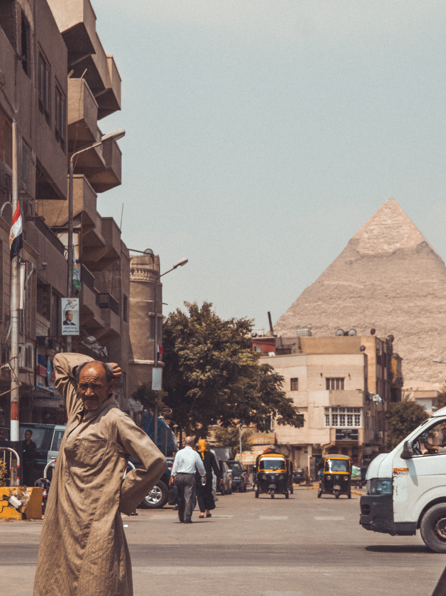

Cairo is chaos at its most magnificent, infuriating and beautiful. From above, the distorted roar of the muezzins' call to prayer echoes out from dueling minarets. Below, car horns bellow tuneless symphonies amid avenues of faded 19th-century grandeur while donkey carts rattle down dusty lanes lined with colossal Fatimid and Mamluk monuments.
This mega-city's constant buzz and noise is a product of its 22-or-so million inhabitants simultaneously crushing Cairo's infrastructure under their collective weight and lifting its spirits up with their exceptional humor. Your nerves will jangle, your snot will run black from the smog and touts will hound you at every turn, but it's a small price to pay to tap into the energy of the place Egyptians call Umm Ad Dunya – the Mother of the World.

Blow your nose, crack a joke and look through the dirt to see the city's true colors.
If you love Cairo, it will definitely love you back.